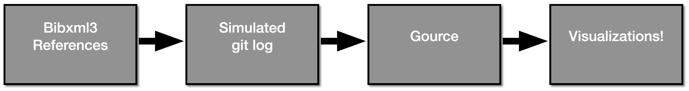

class: center, middle # IETF Hackathon - ID Visualizations IETF 111 July 19-23, 2021 Online --- # Hackathon Plan - How authors have contributed to Internet Drafts over the time. - How different areas has evolved over the time. - Use <a href="https://gource.io/">Gource</a> to create a visualization. <div class="my-footer"><p>IETF Hackathon - ID Visualizations</p></div> --- # What got done  - Use <a href="https://www.ietf.org/standards/ids/internet-draft-mirror-sites/">Bibxml3</a> reference data to simulate a git log. - Authors and dates from the reference data. - IDs are put in to different dirs based on organization, area, working group, name. Example: - ID name: <pre>draft-ietf-emu-eap-tls13-18</pre> - Represented in the log as: <pre>ietf/sec/emu/eap-tls13/draft-ietf-emu-eap-tls13-18</pre> <div class="my-footer"><p>IETF Hackathon - ID Visualizations</p></div> --- # How IDs has been worked in 2021 <iframe width="560" height="315" src="https://www.youtube.com/embed/3pmf486WPaQ?controls=0" title="YouTube video player" frameborder="0" allow="accelerometer; autoplay; clipboard-write; encrypted-media; gyroscope; picture-in-picture" allowfullscreen></iframe> <div class="my-footer"><p>IETF Hackathon - ID Visualizations</p></div> --- # Wrap up Github Project: https://github.com/kesara/visualize-ietf/ Visualizations: <a href="https://youtube.com/playlist?list=PLuakzjxkt1oAjiOhkq66IWgspqnp_ZdfN">Youtube Playlist</a> Questions & comments: <code>Kesara Rathnayake (kesara [at] fq.nz)</code> WG Area based visualizations: - <a href="https://www.youtube.com/watch?v=45PexHj_VjM">Applications and Real-Time Area (art)</a> - <a href="https://www.youtube.com/watch?v=a9PpqZamkck">General Area (gen)</a> - <a href="https://www.youtube.com/watch?v=ieJGnrSpF8E">Internet Area (int)</a> - <a href="https://www.youtube.com/watch?v=MKXWCtxr49A">Operations and Management Area (ops)</a> - <a href="https://www.youtube.com/watch?v=KdR-yusyPw8">Routing Area (rtg)</a> - <a href="https://www.youtube.com/watch?v=SaUIjPF1oRA">Security Area (sec)</a> - <a href="https://www.youtube.com/watch?v=U0qOyCP7WTc">Transport Area (tsv)</a> <div class="my-footer"><p>IETF Hackathon - ID Visualizations</p></div>